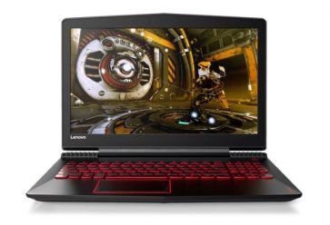
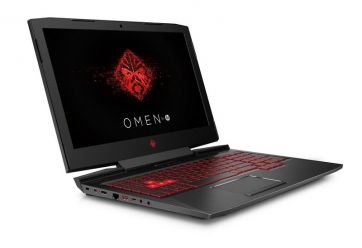
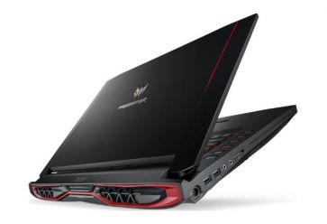
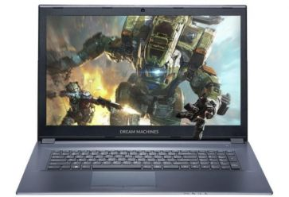
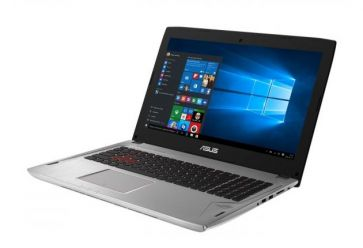

Laptopy
Laptopy do gier to coraz prężniej rozwijający się segment rynku.
Jeśli zastanawiasz się nad kupnem takiego komputera, sprawdź nasze zestawienie TOP 5 najciekawszych modeli aktualnie dostępnych w polskich sklepach.
Znalazły się tutaj zarówno modele ze średniej półki jak i laptopy dla bardzo wąskiego grona odbiorców - imponujące nie tylko wydajnością ale i ceną.
1. Lenovo Legion Y520
Zestawienie zaczynamy od laptopa zdecydowanie najtańszego, co nie znaczy, że nie warto na niego zwrócić uwagi.
Wręcz przeciwnie. Lenovo Legion wyposażony jest we wszystko, co gracz będzie potrzebować, a to wszystko w cenie nie przekraczającej 4 tysiące złotych.
Mamy tutaj procesor Intel Core i5, grafikę Geforce GTX 1050 oraz pojemny dysk twardy.
Jest też miejsce na dodatkowy dysk, gdzie można np. umieścić SSD i dodatkowo przyspieszyć działanie komputera.
Dobry laptop w atrakcyjnej cenie.
2. HP OMEN 15
Również firma HP walczy w podobnym segmencie cenowym.
Ten model HP OMEN 15 kusi przyzwoitą ceną oraz procesorem Core i5 oraz kartą graficzną GeForce GTX 1050 na pokładzie.
Graczom na pewno spodoba się system audio stworzony we współpracy z firmą Bang Olufsen, efektowna obudowa czy podświetlana klawiatura.
Gry możemy instalować na dysku HDD o pojemności 1 TB.
2. Acer Predator G5-793
Gamingowy laptop z serii Acer Predator, to kolejna mocna propozycja dla wymagających graczy.
Drapieżna stylistyka, solidna konstrukcja i mocne podzespoły - to jego główne zalety.
W środku znajdziemy procesor Intel Core i7 oraz grafikę GeForce GTX 1060.
4. Dream Machines G1050Ti-17PL21
Szukasz czegoś z większym ekranem niż 15,6 cala i to jeszcze matowym? Twoje wymagania spełni Dream Machines G1050Ti-17PL21.
Na pokładzie znalazł się procesor Core i7 Kaby Lake, karta graficzna NVIDIA GeForce GTX 1050 Ti oraz 8 GB RAM.
W tym modelu producent zrezygnował z zastosowania pojemnego HDD, ale udostąpnił szybki SSD o pojemności 500 GB.
Z tym sprzętem zapomnisz o długich czasach ładowania.
5. Asus ROG Strix GL502VM
Gamingowa seria Asus ROG, to kolejny potentant segmentu dla graczy.
Tym razem wybrałem laptopa z zupełnie nowymi podzespołami, a to oznacza grafikę Nvidia Geforce GTX 1060 oraz procesor Kaby Lake - Intel Core i7-7700HQ.
Takie połączenie gwarantować będzie, że jeszcze przez długi czas każda nowa gra będzie działać płynnie, bez zacięć i
bez konieczności obniżania szczegółowości grafiki.
Dużą zaletą Asus Strix GL502VM jest jego kompaktowa obudowa, smukła konstrukcja oraz świetna jakość wykonania.